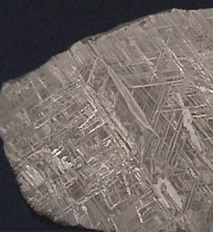

Stony-Iron Meteorites
Meteorites are traditionally classified as irons, stones, and stony-irons. The stony-irons, mixtures of metallic iron and stone, are much rarer than the other types. The samples below are on display at the Smithsonian Museum of Natural History.
|
The collection of iron imbedded within rock leads to view that this material came from an intermediate radius of a sizable asteroid. It is not solid metal like the cores of such asteroids, but the aggregation of the metal suggests that there is enough gravity to cause differentiation according to density.
This meteorite is labeled with the name Ahumada. It is described as a stony-iron palesite and was found in Chihuahua, Mexico in 1909. |
|
This meteorite is obviously mostly metal, with some rock content around the edges. It is some 20 cm across. It was discovered in 1882 and is labeled with the name Brenham. |
|  |
A closeup of the metal of the Brenham meteorite shows interesting striations which presumably show the symmetry of the crystal formation. This image is about actual size. |
|
Index
Solar System Illustration
Solar System Concepts
Reference
Fraknoi, Morrison & Wolff.
Ch 13 |